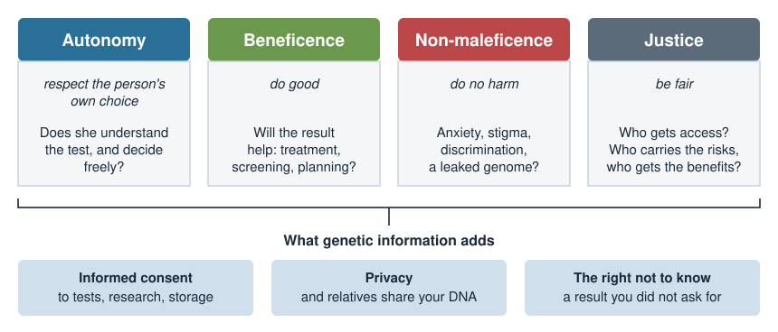
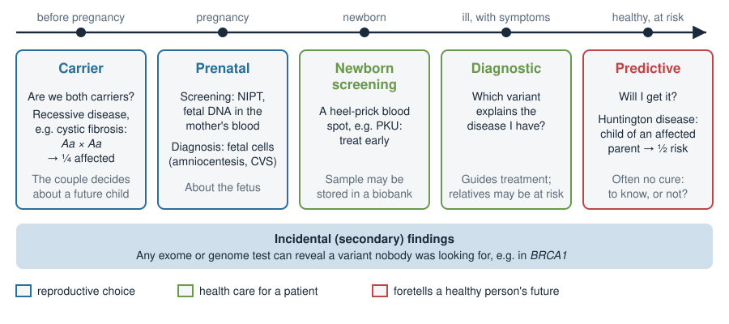
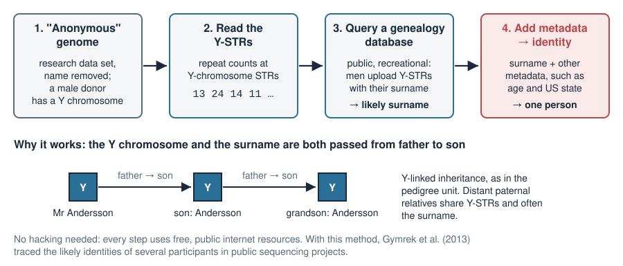
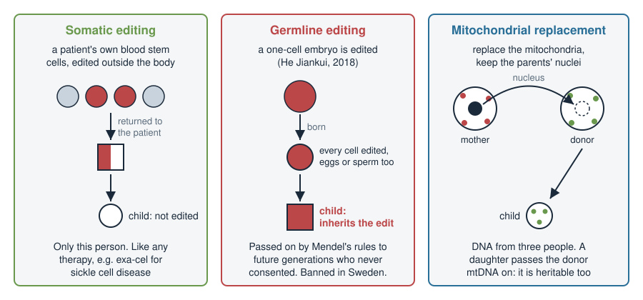
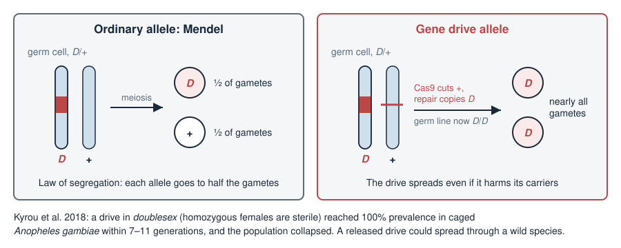

All course long you have predicted genotypes, computed risks and looked up variants. This lecture asks: what happens when those answers concern real people?
A framework: four principles, plus consent, privacy and the right not to know.
Genetic testing: diagnostic, predictive, carrier and prenatal tests, and findings nobody asked for. Direct-to-consumer tests.
Privacy: why a genome cannot be made anonymous, and how genealogy databases now solve crimes.
Editing the germline: embryo editing, mitochondrial replacement and gene drives.
History: eugenics, and the Swedish Institute for Racial Biology and sterilisation laws.
Ethical review of research in Sweden, and the laws on biobanks and genetic data.
The aim is not to give you the right answers. It is to help you see the conflict, name the principles involved and argue for a position. The exercise gives you cases and a literature search.
Why genetic information is special
A blood glucose value is about you, today. A genotype is different:
It is shared. Your relatives carry half, a quarter or an eighth of your alleles. A result about you is also partly a result about them, and they did not consent.
It predicts. A Huntington disease allele says something about your health decades from now, sometimes with no treatment available.
It is permanent and identifying. You can change a password, not a genome. A genome is a unique identifier, and it can be read from a few cells.
It is reproductive. Carrier and prenatal tests inform choices about future people.
Its meaning changes. A variant of uncertain significance today may be classified as pathogenic next year (think of the ClinVar classification from the pedigree exercise).
A framework: four principles

The four principles of biomedical ethics (Beauchamp and Childress, Principles of Biomedical Ethics, 1st edition 1979). Each is a reason that counts; in real cases they conflict, and the work is to weigh them.
Consent, privacy and the right not to know
Informed consent: a person agrees to a test or to research voluntarily, after understanding what it involves, its risks, and what will happen to the sample and the data. Consent can be withdrawn.
Broad consent: agreeing that a stored sample may be used in future research that nobody can describe yet. Common in biobanks; debated, because it is hard to be “informed” about the unknown.
Privacy and confidentiality: genetic results are sensitive data. Who may see them: relatives, employers, insurers, the police?
The right not to know: a person may choose not to learn a genetic result about themselves. This is part of autonomy, and it is why tests are offered, never imposed.
The family problem: one person’s result reveals risk for relatives. The right to know of one person can collide with the right not to know of another.
Kinds of genetic testing

The same lab method can serve very different purposes. The ethics depends on who is tested, why, and what can be done with the answer.
Predictive testing: Huntington disease
Recall the Mendel unit: Huntington disease is autosomal dominant with late onset. A child of an affected parent (Aa × aa) has a ½ risk. Since the HTT CAG-repeat expansion was found (Huntington’s Disease Collaborative Research Group 1993, PMID 8458085), a healthy person at risk can learn their genotype.
No cure. A positive result is a forecast, not a treatment plan.
International guidelines: counselling before and after, a free choice without coercion, and a minimum age of 18 (MacLeod et al. 2013, PMID 22642570). The child’s own future choice is protected.
Most people at risk choose not to know: in the UK, cumulative uptake among people at 50% risk (1994–2014) was about 17% (Baig et al. 2016, PMID 27165004).
Testing reveals others. A positive result in a grandchild means the parent in between carries the allele too. Testing one identical twin tests both.
Prenatal testing and NIPT
Prenatal diagnosis tests fetal cells, obtained by amniocentesis or chorionic villus sampling (CVS). Both carry a small risk of miscarriage.
NIPT (non-invasive prenatal testing) analyses cell-free fetal DNA in the mother’s blood. Fetal DNA in maternal plasma was first shown by Lo et al. (1997, Lancet, PMID 9274585). NIPT is a screening test, mainly for trisomies 21, 18 and 13; a positive result is confirmed by a diagnostic test.
In Sweden, all pregnant women must be offered general information about prenatal diagnosis, and the woman decides whether to be tested (Genetic Integrity Act, 2006:351, ch. 4).
Ethical questions: a simple blood test makes testing routine, so is the choice still informed? What does wide screening say to people who live with Down syndrome? Where is the line between serious disease and choosing traits?
Incidental and secondary findings
Sequence an exome to explain a child’s epilepsy, and you may also find a pathogenic BRCA1 variant in a parent: a high risk of breast and ovarian cancer that nobody was looking for.
Incidental finding: found by chance, unrelated to the question asked.
Secondary finding: deliberately looked for in a short list of actionable genes, where knowing allows prevention. The ACMG publishes such a list (v3.2: Miller et al. 2023, PMID 37347242; updated in v3.3, 2025, PMID 40568962). BRCA1 is on it.
Labs and clinics must decide in advance, with the patient: which findings will be reported, and may the patient opt out?
Principles in tension: beneficence (prevention saves lives; relatives could be tested too) against autonomy and the right not to know.
Direct-to-consumer genomics
Companies sell genotyping directly to the public, without a doctor: ancestry, relative matching, traits and some health risks. The customer spits in a tube and gets results online.
Autonomy and access: people can learn about themselves without a gatekeeper.
Without counselling: a health result can frighten or falsely reassure. Genotyping arrays test selected variants, so a “no variant found” for BRCA1 does not mean “no risk”.
Relatives: matching reveals unknown siblings, donor-conceived children, misattributed paternity. Your relatives never agreed to be found.
Data as an asset: the company holds a large genetic database. Its terms of use, a data breach, or a change of owner decide what happens to it.
Raw data mislead: in one clinical lab, 40% of variants from DTC raw data sent for confirmation were false positives (Tandy-Connor et al. 2018, PMID 29565420).
US example, 23andMe: an FDA warning letter stopped its health reports in 2013; the FDA authorised its first health-risk reports in 2017; in 2023 a breach of about 14,000 accounts exposed millions of relative-matching profiles; it filed for bankruptcy in March 2025 and was sold in July 2025.
Genetic privacy: you cannot anonymise a genome

Gymrek et al. (2013, Science, PMID 23329047) recovered surnames from “anonymous” research genomes by reading Y-chromosome STRs and querying public genealogy databases; combined with age and US state, this traced the identities of research participants. They projected that surnames of about 12% of US white males could be recovered this way.
Genetic genealogy and the police
Investigative genetic genealogy: genotype a crime-scene sample with a SNP array, upload it to a genealogy database, find distant cousins, then build their family trees until one person fits.
Golden State Killer: a suspect in a series of 1970s–80s California murders and rapes was arrested on 24 April 2018 after relatives were found in the free genealogy database GEDmatch (Guerrini et al. 2018, PMID 30278047). He pleaded guilty in 2020 and was sentenced to life without parole. In 2019 GEDmatch made police matching opt-in.
Scale: from 1.28 million consumer genomes, Erlich et al. (2018, PMID 30309907) projected that about 60% of searches for people of European descent would find a third cousin or closer.
Sweden: first used in 2019, on a 16-year-old double murder in Linköping. The Authority for Privacy Protection (IMY) halted further use in 2021; a new law allows the police to use it from 1 July 2025, only for murder and aggravated rape, as a last resort (Ansell & Fagerholm 2025, PMID 40995235).
You used these databases all course
Database (unit)
What it shares
Who it could identify?
NCBI Gene, Ensembl, OMIM (Part 1)
reference genes and diseases
no one
ClinVar (pedigrees)
variants and their interpretation, without names
rarely, for very rare variants
gnomAD (Part 7)
aggregate allele counts only
very hard
1000 Genomes (Part 4)
individual genotypes, openly
possible: no names or medical data, but open consent to public release
A genealogy site
individual genotypes with names and family trees
you, and your relatives
The same data type, a genotype, can be harmless or identifying depending on how it is shared. Open data speeds up research; controlled access and aggregation protect participants.
Germline editing

Somatic editing treats one person. Example: exa-cel, CRISPR-edited blood stem cells for sickle cell disease (Frangoul et al. 2024, PMID 38661449).
Germline editing changes an embryo, so every cell, including the gametes, carries the edit. The change is inherited by Mendel’s rules.
He Jiankui and the CRISPR babies
On 25–26 November 2018, just before an international summit on human genome editing in Hong Kong, He Jiankui announced the birth of twin girls whose embryos he had edited with CRISPR-Cas9 to disrupt CCR5, the co-receptor HIV uses to enter cells (Cyranoski & Ledford 2018, PMID 30482929).
No medical need: the father had HIV, but sperm washing can prevent transmission to the child with no risk.
Not what was intended: neither twin got the natural CCR5-Δ32 deletion; the edits made new mutations, and the children are mosaics (Greely 2019, PMID 31666967).
Consent and oversight: how the parents were informed, and the ethics approval, could not be independently checked; the work was done in secret.
On 30 December 2019 a court in Shenzhen sentenced him to three years in prison and a fine of 3 million yuan for illegal medical practice; it also confirmed a third edited baby (Cyranoski 2020, PMID 31911693).
The response was near-universal condemnation, and calls for a moratorium on heritable editing.
Mitochondrial replacement
Diseases caused by mtDNA mutations pass from mother to all her children (pedigree unit; full story in Part 5, Organelle inheritance). Mitochondrial replacement therapy (MRT) moves the mother’s nucleus into a donor egg with healthy mitochondria.
The child gets nuclear DNA from both parents and mtDNA from the donor: DNA from three people.
The UK allowed it by regulations in force from 29 October 2015, under licence. In 2025 the Newcastle team reported 8 children born after pronuclear transfer, healthy at birth, with mutant mtDNA in blood from undetectable up to 16% (Hyslop et al. 2025, PMID 40673696; McFarland et al. 2025, PMID 40689593).
It is heritable through daughters, and carry-over of some mutant mtDNA means a risk that its level rises again.
Is replacing ~37 genes of mtDNA different from editing a nuclear gene? Should the donor have any status?
Gene drives

A gene drive cheats Mendel’s law of segregation: a heterozygote passes the drive to nearly all offspring, not half. It could eliminate malaria mosquitoes, or an invasive species.
History: eugenics in Sweden
Eugenics: the idea of “improving” a population by controlling who reproduces. Francis Galton coined the word in 1883. It was mainstream science in many countries in the early 20th century, including Sweden.
The State Institute for Racial Biology (Statens institut för rasbiologi) was set up by a decision of the Riksdag in 1921 and opened in Uppsala in 1922, with Herman Lundborg (director 1921–1935) in charge. It set out to divide the Swedish population into “racial” categories, measuring people and photographing them; Lundborg made repeated trips to Lapland to measure and photograph Sami people.
His successor, Gunnar Dahlberg, questioned the scientific basis of race research, and the institute moved towards medical genetics. In 1958–59 its work was absorbed into Uppsala University’s Department of Medical Genetics.
Its archive, with about 12,000 photographs, is kept by Uppsala University Library.
The Swedish sterilisation laws, 1935–1975
The 1934 act (SFS 1934:171, in force 1 January 1935) allowed sterilisation of people considered mentally ill or “feeble-minded” without their consent if they were judged unable to understand it. The 1941 act (SFS 1941:282) was in principle voluntary, but still allowed sterilisation without consent of people judged legally incapable. The grounds were eugenic, social and medical.
Nearly 63,000 sterilisations were reported in 1935–1975; 93% of those sterilised were women. About 9% were done without consent, and about 24% after a formally voluntary application under coercion-like conditions, e.g. as a condition for leaving an institution or for getting an abortion.
The 1975 act (SFS 1975:580, in force 1976) allows sterilisation only at the person’s own request.
A government inquiry appointed in 1997 (final report SOU 2000:20) investigated, and a 1999 law (SFS 1999:332) gave SEK 175,000 in compensation to people sterilised under compulsion.
The genetics was also wrong: most alleles for recessive conditions are carried by healthy heterozygotes, so sterilising affected people barely changes their frequency (Part 7, Hardy–Weinberg).
Ethical review of research in Sweden
The Ethical Review Act (Lag (2003:460) om etikprövning av forskning som avser människor, in force 2004). Research must be approved before it starts if it:
processes sensitive personal data (e.g. health or genetic data) or data on criminal offences;
involves a physical intervention, or a method meant to affect a person physically or mentally, or an obvious risk of harm;
uses biological material from a living or dead person that can be traced to them.
Applications go to the Swedish Ethical Review Authority (Etikprövningsmyndigheten, Uppsala, since 1 January 2019). Consent must be voluntary, explicit and specific to the research. Doing such research without approval is a crime.
Internationally: the World Medical Association’s Declaration of Helsinki (1964, last revised October 2024).
Identifiable human samples may be collected, stored and used, for care or research, with the donor’s informed consent, which can be withdrawn. Includes the PKU biobank of newborn blood spots.
GDPR (EU 2016/679, applies from 25 May 2018)
Genetic data (Art. 4(13)) is a special category of personal data (Art. 9): processing is prohibited unless an exception applies, such as explicit consent or approved research.
Genetic Integrity Act (2006:351)
Nobody may make a genetic test a condition of a contract; insurers may use genetic information only in narrow cases. Heritable genetic changes in humans are banned. Rules for prenatal and preimplantation diagnosis.
Sample re-use is common: newborn blood spots from the Swedish PKU biobank were used to trace PFAS exposure from contaminated drinking water in Ronneby back to 1985 (PMID 40089001).
Summary
Genetic information is shared, predictive, permanent, identifying and reproductive. That is why it gets special ethical and legal treatment.
Four principles: autonomy, beneficence, non-maleficence, justice. Add consent, privacy and the right not to know. Good arguments name the principles in tension and weigh them.
Testing: predictive testing (Huntington disease), prenatal tests and NIPT, incidental findings (BRCA1), and DTC tests each raise different questions.
Privacy: names can be recovered from genomes (Y-STRs, surnames); genealogy databases identify people through their relatives.
Germline: editing an embryo, mitochondrial replacement and gene drives all make heritable changes.
History: Sweden’s racial biology institute and sterilisation laws are why consent and independent ethical review matter.
Exercise: six cases for group discussion, a check of when Swedish research needs ethical review, and a PubMed search strategy with MeSH terms to find literature for each case.
Group assignment: a written analysis of one case and an oral presentation (details on Canvas).
Back to the course: Huntington disease (Mendel), Y-linked and mitochondrial inheritance (Pedigree analysis, Organelle inheritance), CRISPR and sequencing (Part 4), allele frequencies and why eugenics failed (Hardy–Weinberg), and every database you used.